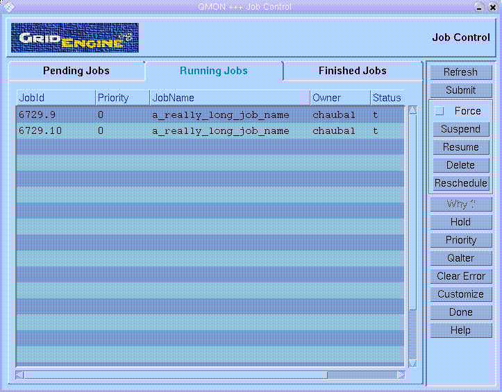

The qmon(1) graphical user interface can be used to perform all administrative tasks in Grid Engine, as well as providing users with a way to submit and monitor jobs. By default, both administrative and operational features appear together in a single GUI. This HOWTO goes over ways to customize the behavior of qmon so that only certain functions are operable. It also shows how to make the GUI more user-friendly, by increasing button size and modifying field size in the Job Control window.
In order to restrict the buttons active in the main panel of qmon, a wrapper script must be created that calls the actual binary with a modified environment variable:
#!/bin/ksh
# wrapper script for
qmon to change default appearance
export
XFILESEARCHPATH=$SGE_ROOT/qmon/Qmon
qmon.real
Rename the qmon binary to
qmon.real. Note this must be done individually
for all architecture binaries of qmon, e.g.,
all of $SGE_ROOT/bin/*/qmon
Next, the file $SGE_ROOT/qmon/Qmon
must be modified to reflect the changes. Add the end of the file, add
the following:
!!!!!!!!!!!!!!!!!!!!!!!!!!!!!!!!!!!!!!!!!! !! CHANGES !!!!!!!!!!!!!!!!!!!!!!!!!!!!!!!!!!!!!!!!!! !Qmon*JOB_CONTROL.sensitive: False !Qmon*QUEUE_CONTROL.sensitive: False !Qmon*SUBMIT_JOB.sensitive: False Qmon*COMPLEX_CONFIG.sensitive: False Qmon*HOST_CONFIG.sensitive: False Qmon*CLUSTER_CONFIG.sensitive: False Qmon*SCHED_CONFIG.sensitive: False Qmon*CALENDAR_CONFIG.sensitive: False Qmon*USER_CONFIG.sensitive: False Qmon*PE_CONFIG.sensitive: False Qmon*CKPT_CONFIG.sensitive: False !Qmon*BROWSER.sensitive: False Qmon*TICKET_OVERVIEW.sensitive: False Qmon*PROJECT_CONFIG.sensitive: False !Qmon*EXIT.sensitive: False Qmon*MainMenuBar.sensitive: False
This disables the administrative functions and the menu bar (which is another path to administrative functions). If you uncomment (remove the !)
!Qmon*QUEUE_CONTROL.sensitive: False
then users cannot see the Queue Control either. Basically, any button which is not commented out by ! becomes disabled.
The default button size on the main screen of qmon is small and the function of the button cannot be seen without hovering the pointer over it to view the ToolTip. You can change the size of these buttons and make them large enough to read the action written on them.
To do this, change the same Qmon file as above from:
!! Qmon*pixmapFilePath: %R/qmon/PIXMAPS/big/%N.xpm:%R/qmon/PIXMAPS/%N.xpm Qmon*pixmapFilePath: %R/qmon/PIXMAPS/%N.xpm
to
Qmon*pixmapFilePath: %R/qmon/PIXMAPS/big/%N.xpm:%R/qmon/PIXMAPS/%N.xpm !! Qmon*pixmapFilePath: %R/qmon/PIXMAPS/%N.xpm
Below is a screenshot of the window resulting from both of the above modifications:
The Job Control window provides a way to see a summary of pending, running, and finished jobs. The fields which are displayed can be easily changed by pressing the Customize button in that window. However, there is also a way to change the field widths so that the full information for each field can be viewed. A horizontal scroll bar permits viewing of all information in case it doesn't fit on the screen all at once.
To change field widths in any of the three Job Control panes,
move the mouse pointer below any field divider
Click and hold Control-middle-mouse-button and a vertical separator line will appear
drag this separator with the mouse to the desired width, and release
The diagram shows an example after resizing the job name field.
Using a wrapper script and modified Qmon resource file, the changes are global. However, these changes can be overridden for individual users, such as the SGE admin user. To have user-specific settings, do the following:
create a private copy of the Qmon resource in the home directory of the user, which specifies all desired features. For example, have big buttons, and do not disable any of them.
have the user invoke the qmon.real
binary (as opposed to the wrapper script)
In this way, the SGE admin user can re-enable the administrative functions in qmon.